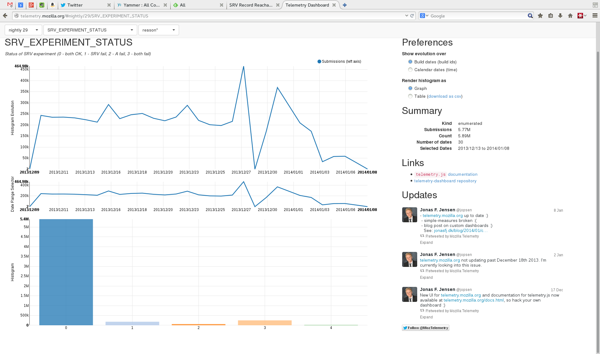

SRV Record Reachability
Nicholas Hurley (hurley@mozilla.com, @todesschaf)
Patrick McManus (pmcmanus@mozilla.com)
DNS SRV Record Reachability
Nicholas Hurley (hurley@mozilla.com, @todesschaf)
Patrick McManus (pmcmanus@mozilla.com)
Want to be able to upgrade http:// to https://
Without incuring extra round trips like Upgrade, Alt-Svc, etc
Without risking sending cookies in the clear
Experiment Method
Wildcard DNS entries for *.http2test.mozilla.org, both A and SRV
When looking up *.mozilla.org, run the experiment (preserve privacy)
Run once per browser session
Each run uses unique hostnames (cache busting)
Lookup A and SRV in parallel
When results come in, compare with expected results
Compare response times to ensure SRV isn't artifically hindered
Telemetry Results (Success Percentage)

Foo
Bar
Baz
Quux
Telemetry Results (Timing Comparison)
Foo
Bar
Baz
Quux
Conclusions
Using DNS SRV records isn't perfect, but it's good enough to use as a first try for upgrading HTTP/1 to HTTP/2 while using Alt-Svc as a fallback.
Thanks to Mozilla Services for setting up the DNS infrastrcture for us to test this.